You’ll explore some R spatial viz tools below. In general, there are two important pieces to every map:
Piece 1: A dataset
This dataset must include either:
location coordinates for your points of interest (for point maps); or
variable outcomes for your regions of interest (for choropleth maps)
Piece 2: A background map
We need latitude and longitude coordinates to specify the boundaries for your regions of interest (eg: countries, states). This is where it gets really sticky!
County-level, state-level, country-level, continent-level info live in multiple places.
Where we grab this info can depend upon whether we want to make a point map or a choropleth map. (The background maps can be used somewhat interchangeably, but it requires extra code :/)
Where we grab this info can also depend upon the structure of our data and how much data wrangling / cleaning we’re up for. For choropleth maps, the labels of regions in our data must match those in the background map. For example, if our data labels states with their abbreviations (eg: MN) and the background map refers to them as full names in lower case (eg: minnesota), we have to wrangle our data so that it matches the background map.
In short, the code for spatial viz gets very specialized. The goal of these exercises is to:
play around and experience the wide variety of spatial viz tools out there
understand the difference between point maps and choropleth maps
have fun
You can skip around as you wish and it’s totally fine if you don’t finish everything. Just come back at some point to play around.
4.1.2 Part 1: Interactive points on a map with leaflet
Leaflet is an open-source JavaScript library for creating maps. We can use it inside R through the leaflet package.
This uses a different plotting framework than ggplot2, but still has a tidyverse feel (which will become more clear as we learn other tidyverse tools!).
The general steps are as follows:
Create a map widget by calling leaflet() and telling it the data to use.
Add a base map using addTiles() (the default) or addProviderTiles().
Add layers to the map using layer functions (e.g. addMarkers(), addPolygons()).
Print the map widget to display it.
Exercise 1: A leaflet with markers / points
Earlier this semester, I asked for the latitude and longitude of one of your favorite places. I rounded these to the nearest whole number, so that they’re near to but not exactly at those places. Let’s load the data and map it!
fave_places <-read.csv("https://ajohns24.github.io/data/112/our_fave_places.csv")# Check it outhead(fave_places)
You can use a “two-finger scroll” to zoom in and out.
# Load the leaflet packagelibrary(leaflet)# Just a plotting frameleaflet(data = fave_places)
# Now what do we have?leaflet(data = fave_places) %>%addTiles()
# Now what do we have?# longitude and latitude refer to the variables in our dataleaflet(data = fave_places) %>%addTiles() %>%addMarkers(lng =~longitude, lat =~latitude)
# Since we named them "longitude" and "latitude", the function# automatically recognizes these variables. No need to write them!leaflet(data = fave_places) %>%addTiles() %>%addMarkers()
Part b
PLAY AROUND! This map is interactive. Zoom in on one location. Keep zooming – what level of detail can you get into? How does that detail depend upon where you try to zoom in (thus what are the limitations of this tool)?
You can see the type of landscape, the roads. You lose information from other places when you do this.
Exercise 2: Details
We can change all sorts of details in leaflet maps.
# Load package needed to change colorlibrary(gplots)
# We can add colored circles instead of markers at each locationleaflet(data = fave_places) %>%addTiles() %>%addCircles(color =col2hex("red"))
# We can change the background# Mark locations with yellow dots# And connect the dots, in their order in the dataset, with green lines# (These green lines don't mean anything here, but would if this were somebody's travel path!)leaflet(data = fave_places) %>%addProviderTiles("USGS") %>%addCircles(weight =10, opacity =1, color =col2hex("yellow")) %>%addPolylines(lng =~longitude,lat =~latitude,color =col2hex("green") )
In general:
addProviderTiles() changes the base map.
To explore all available provider base maps, type providers in the console. (Though some don’t work :/)
Use addMarkers() or addCircles() to mark locations. Type ?addControl into the console to pull up a help file which summarizes the aesthetics of these markers and how you can change them. For example:
weight = how thick to make the lines, points, pixels
opacity = transparency (like alpha in ggplot2)
colors need to be in “hex” form. We used the col2hex() function from the gplots library to do that
Exercise 3: Your turn
The starbucks data, compiled by Danny Kaplan, contains information about every Starbucks in the world at the time the data were collected, including Latitude and Longitude:
Let’s add a background map of country-level boundaries.
Part a
First, we can grab country-level boundaries from the rnaturalearth package.
# Load the packagelibrary(rnaturalearth)# Get info about country boundaries across the world# in a "sf" or simple feature formatworld_boundaries <-ne_countries(returnclass ="sf")
In your console, type world_boundaries to check out what’s stored there. Don’t print it our in your Rmd – printing it would be really messy there (even just the head()).
Part b
Run the chunks below to build up a new map.
# What does this code produce?# What geom are we using for the point map?ggplot(world_boundaries) +geom_sf()
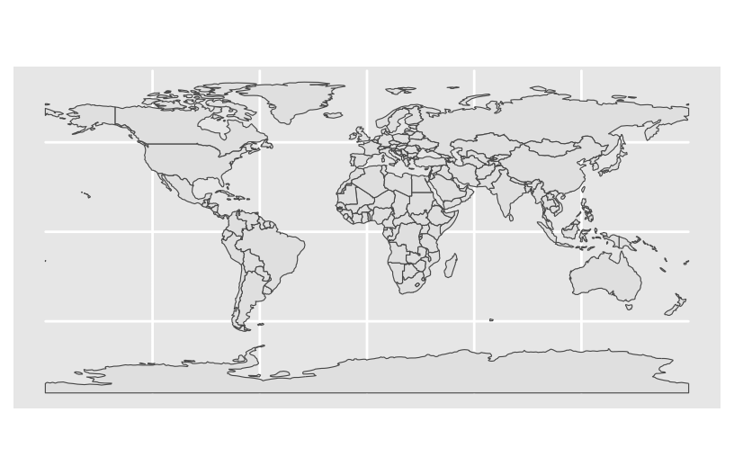
# Load package needed to change map themelibrary(mosaic)# Add a point for each Starbucks# NOTE: The Starbucks info is in our starbucks data, not world_boundaries# How does this change how we use geom_point?!ggplot(world_boundaries) +geom_sf() +geom_point(data = starbucks,aes(x = Longitude, y = Latitude),alpha =0.3, size =0.2, color ="darkgreen" ) +theme_map()
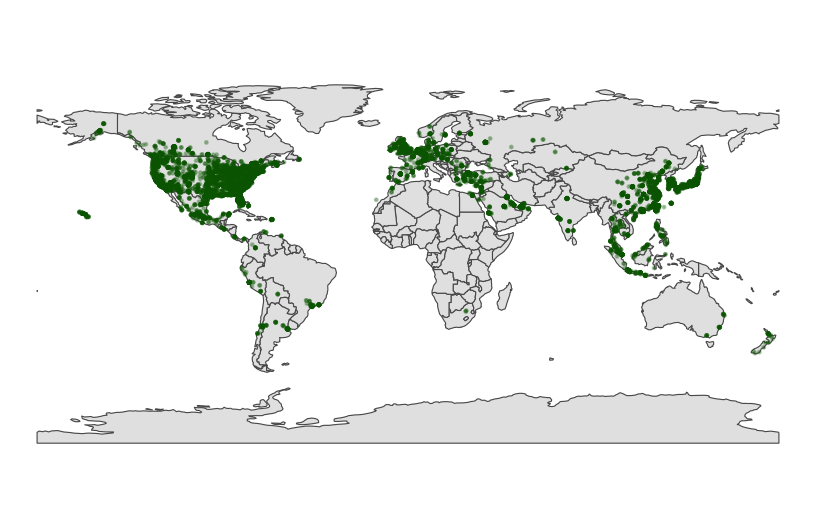
Part c
Summarize what you learned about Starbucks from this map.
The more colonial the country, the more starbucks (except for Italy).
Exercise 5: Zooming in on some countries
Instead of world_boundaries <- ne_countries(returnclass = 'sf') we could zoom in on…
the continent of Africa: ne_countries(continent = 'Africa', returnclass = 'sf')
a set of countries: ne_countries(country = c('france', 'united kingdom', 'germany'), returnclass = 'sf')
boundaries within a country: ne_states(country = 'united states of america', returnclass = 'sf')
Our goal here will be to map the Starbucks locations in Canada, Mexico, and the US.
Part a
To make this map, we again need two pieces of information.
Data on Starbucks for only Canada, Mexico, and the US, labeled as “CA”, “MX”, “US” in the starbucks data.
# We'll learn this syntax soon! Don't worry about it now.starbucks_cma <- starbucks %>%filter(Country %in%c('CA', 'MX', 'US'))
A background map of state- and national-level boundaries in Canada, Mexico, and the US. This requires ne_states() in the rnaturalearth package where the countries are labeled ‘canada’, ‘mexico’, ‘united states of america’.
cma_boundaries <-ne_states(country =c("canada", "mexico", "united states of america"),returnclass ="sf")
Part b
Make the map!
# Just the boundariesggplot(cma_boundaries) +geom_sf()
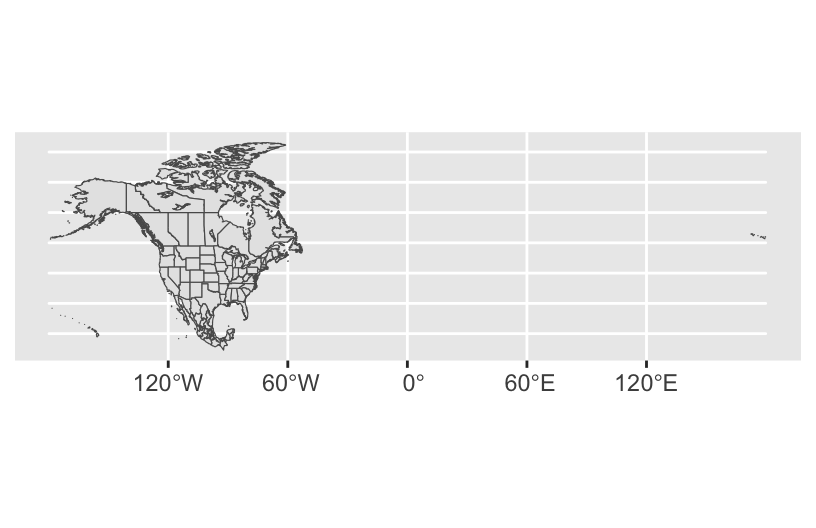
# Add the points# And zoom inggplot(cma_boundaries) +geom_sf() +geom_point(data = starbucks_cma,aes(x = Longitude, y = Latitude),alpha =0.3,size =0.2,color ="darkgreen" ) +coord_sf(xlim =c(-179.14, -50)) +theme_map()
Exercise 6: A state and county-level map
Let’s get an even higher resolution map of Starbucks locations within the states of Minnesota, Wisconsin, North Dakota, and South Dakota, with a background map at the county-level.
Part a
To make this map, we again need two pieces of information.
Data on Starbucks for only the states of interest.
A background map of state- and county-level boundaries in these states. This requires st_as_sf() in the sf package, and map() in the maps package, where the countries are labeled ‘minnesota’, ‘north dakota’, etc.
# Load packageslibrary(sf)library(maps)# Get the boundariesmidwest_boundaries <-st_as_sf( maps::map("county",region =c("minnesota", "wisconsin", "north dakota", "south dakota"), fill =TRUE, plot =FALSE))# Check it outhead(midwest_boundaries)
Simple feature collection with 6 features and 1 field
Geometry type: MULTIPOLYGON
Dimension: XY
Bounding box: xmin: -96.81268 ymin: 45.05167 xmax: -93.01397 ymax: 48.53526
Geodetic CRS: +proj=longlat +ellps=clrk66 +no_defs +type=crs
ID geom
minnesota,aitkin minnesota,aitkin MULTIPOLYGON (((-93.03689 4...
minnesota,anoka minnesota,anoka MULTIPOLYGON (((-93.51817 4...
minnesota,becker minnesota,becker MULTIPOLYGON (((-95.14537 4...
minnesota,beltrami minnesota,beltrami MULTIPOLYGON (((-95.58655 4...
minnesota,benton minnesota,benton MULTIPOLYGON (((-93.77027 4...
minnesota,big stone minnesota,big stone MULTIPOLYGON (((-96.10794 4...
Part b
Adjust the code below to make the plot! Remove the # to run it.
ggplot(midwest_boundaries) +geom_sf() +geom_point(data = starbucks_midwest,aes(x = Longitude, y = Latitude),alpha =0.7,size =0.2, color ='darkgreen' ) +theme_map()
Exercise 7: Contour maps
Especially when there are lots of point locations, and those locations start overlapping on a map, it can be tough to visualize areas of higher density. Consider the Starbucks locations in Canada, Mexico, and the US that we mapped earlier:
# Point map (we made this earlier)ggplot(cma_boundaries) +geom_sf() +geom_point(data = starbucks_cma,aes(x = Longitude, y = Latitude),alpha =0.3,size =0.2,color ="darkgreen" ) +coord_sf(xlim =c(-179.14, -50), ylim =c(14.54, 83.11)) +theme_map()
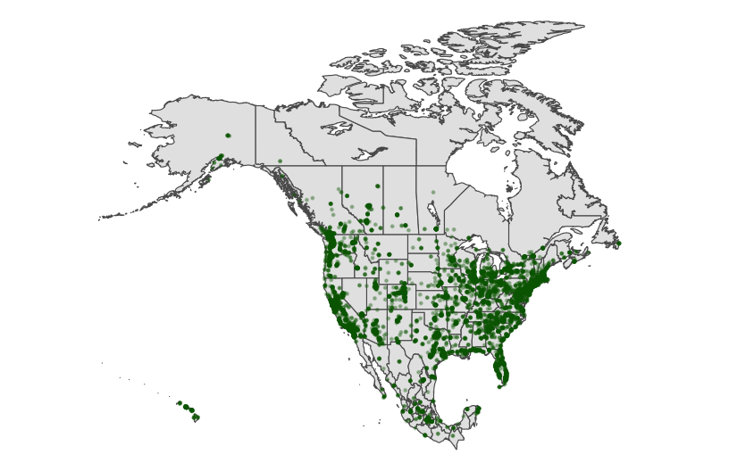
Now check out the contour map.
# What changed in the plot?# What changed in our code?!ggplot(cma_boundaries) +geom_sf() +geom_density_2d(data = starbucks_cma,aes(x = Longitude, y = Latitude),size =0.2,color ="darkgreen" ) +coord_sf(xlim =c(-179.14, -50), ylim =c(14.54, 83.11)) +theme_map()
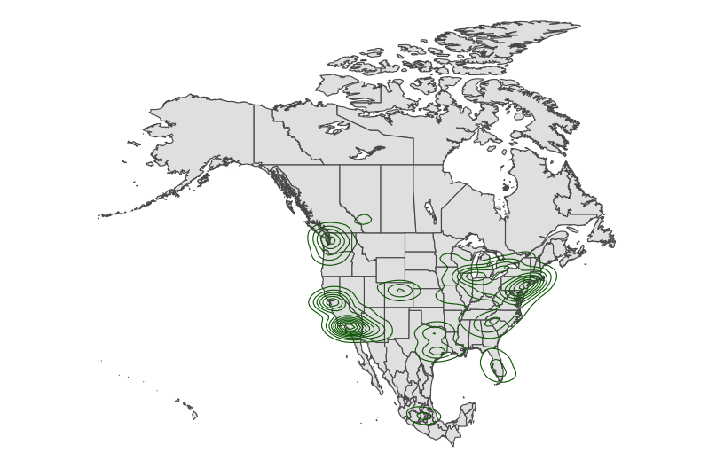
4.1.4 Part 3: Choropleth maps
Spatial data isn’t always in the form of point locations! For example, recall the state and county-level data on presidential elections.
In these datasets, we’re interested in the overall election outcome by region (state or county), not the specific geographic location of some observation. Let’s wrangle our data first. We’ll focus on just a few variables of interest, and create a new variable (repub_20_categories) that discretizes the repub_pct_20 variable into increments of 5 percentage points (for states) or 10 percentage points (for counties):
Let’s map the 2020 Republican support in each state, repub_pct_20.
Part a
We again need two pieces of information.
Data on elections in each state, which we already have: elections_by_state.
A background map of state boundaries in the US. The boundaries we used for point maps don’t work here. (Optional detail: they’re sf objects and we now need a data.frame object.) Instead, we can use the map_data() function from the ggplot2 package:
# Get the latitude and longitude coordinates of state boundariesstates_map <-map_data("state")# Check it outhead(states_map)
long lat group order region subregion
1 -87.46201 30.38968 1 1 alabama <NA>
2 -87.48493 30.37249 1 2 alabama <NA>
3 -87.52503 30.37249 1 3 alabama <NA>
4 -87.53076 30.33239 1 4 alabama <NA>
5 -87.57087 30.32665 1 5 alabama <NA>
6 -87.58806 30.32665 1 6 alabama <NA>
Pause
Important detail: Note that the region variable in states_map, and the state_name variable in elections_by_state both label states by the full name in lower case letters. This is critical to the background map and our data being able to communicate.
head(states_map)
long lat group order region subregion
1 -87.46201 30.38968 1 1 alabama <NA>
2 -87.48493 30.37249 1 2 alabama <NA>
3 -87.52503 30.37249 1 3 alabama <NA>
4 -87.53076 30.33239 1 4 alabama <NA>
5 -87.57087 30.32665 1 5 alabama <NA>
6 -87.58806 30.32665 1 6 alabama <NA>
head(elections_by_state)
state_name state_abbr repub_pct_20 repub_20_categories
1 alabama AL 62.03 60-64
2 arkansas AR 62.40 60-64
3 arizona AZ 49.06 45-49
4 california CA 34.33 30-34
5 colorado CO 41.90 40-44
6 connecticut CT 39.21 35-39
Part b
Now map repub_pct_20 by state.
# Note where the dataset, elections_by_state, is used# Note where the background map, states_map, is usedggplot(elections_by_state, aes(map_id = state_name, fill = repub_pct_20)) +geom_map(map = states_map) +expand_limits(x = states_map$long, y = states_map$lat) +theme_map()
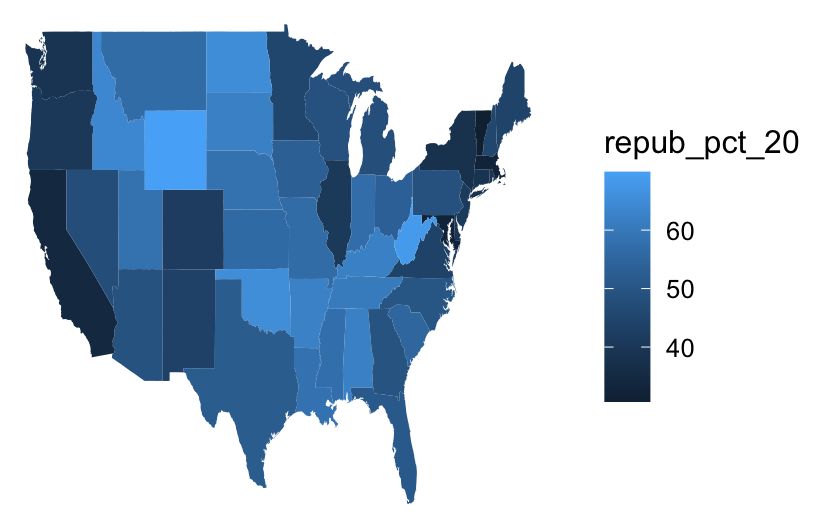
# Make it nicer!ggplot(elections_by_state, aes(map_id = state_name, fill = repub_pct_20)) +geom_map(map = states_map) +expand_limits(x = states_map$long, y = states_map$lat) +theme_map() +scale_fill_gradientn(name ="% Republican", colors =c("blue", "purple", "red"), values = scales::rescale(seq(0, 100, by =5)))
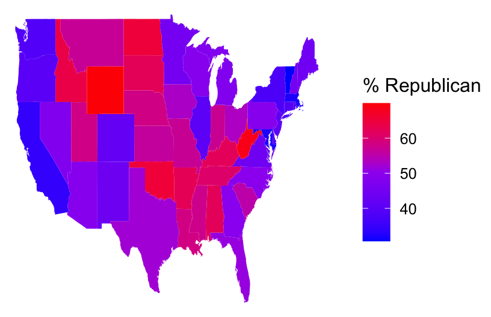
It’s not easy to get fine control over the color scale for the quantitative repub_pct_20 variable. Instead, let’s plot the discretized version, repub_20_categories:
ggplot(elections_by_state, aes(map_id = state_name, fill = repub_20_categories)) +geom_map(map = states_map) +expand_limits(x = states_map$long, y = states_map$lat) +theme_map()
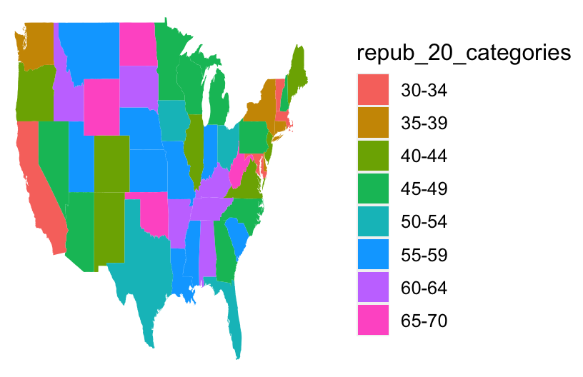
# Load package needed for refining color palettelibrary(RColorBrewer)# Now fix the colorsggplot(elections_by_state, aes(map_id = state_name, fill = repub_20_categories)) +geom_map(map = states_map) +expand_limits(x = states_map$long, y = states_map$lat) +theme_map() +scale_fill_manual(values =rev(brewer.pal(8, "RdBu")), name ="% Republican")
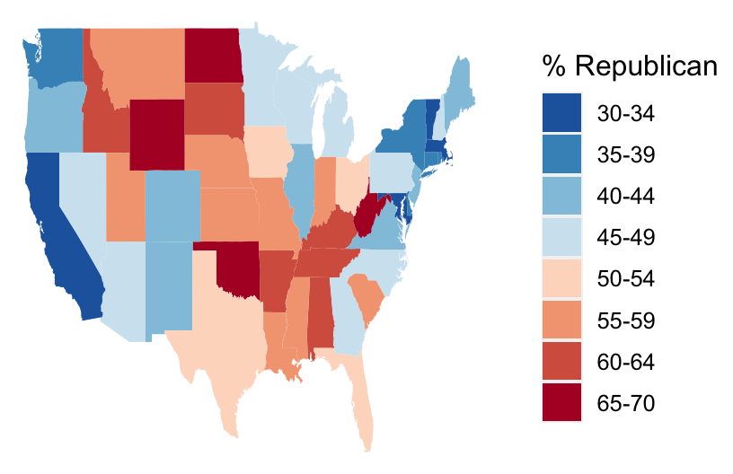
Part c
We can add other layers, like points, on top of a choropleth map. Add a Starbucks layer! Do you notice any relationship between Starbucks and elections? Or are we just doing things at this point? ;)
# Get only the starbucks data from the USstarbucks_us <- starbucks %>%filter(Country =="US")# Map itggplot(elections_by_state, aes(map_id = state_name, fill = repub_20_categories)) +geom_map(map = states_map) +geom_point(data = starbucks_us,aes(x = Longitude, y = Latitude),size =0.05,alpha =0.2,inherit.aes =FALSE ) +expand_limits(x = states_map$long, y = states_map$lat) +theme_map() +scale_fill_manual(values =rev(brewer.pal(8, "RdBu")), name ="% Republican")
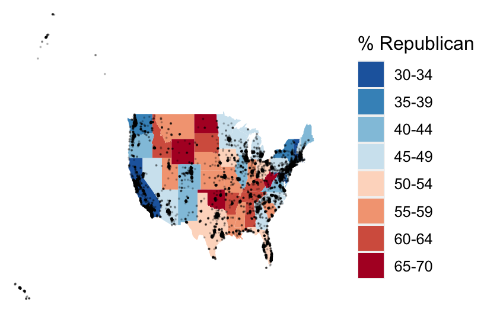
Details (if you’re curious)
map_id is a required aesthetic for geom_map().
It specifies which variable in our dataset indicates the region (here state_name).
It connects this variable (state_name) to the region variable in our mapping background (states_map). These variables must have the same possible outcomes in order to be matched up (alabama, alaska, arizona,…).
expand_limits() assures that the map covers the entire area it’s supposed to, by pulling longitudes and latitudes from the states_map.
Part d
geom_map()
Exercise 9: County-level choropleth maps
Let’s map the 2020 Republican support in each county.
Part a
We again need two pieces of information.
Data on elections in each county, which we already have: elections_by_county.
A background map of county boundaries in the US, stored in the county_map dataset in the socviz package:
# Get the latitude and longitude coordinates of county boundarieslibrary(socviz)data(county_map) # Check it outhead(county_map)
Important detail: We officially have a headache. Our county_map refers to each county by a 5-numberid. Our elections_by_counties data refers to each county by a county_fips code, which is mostly the same as id, BUT drops any 0’s at the beginning of the code.
state_name state_abbr county_name county_fips repub_pct_20 median_age
1 Alabama AL Autauga County 1001 71.44 37.5
2 Alabama AL Baldwin County 1003 76.17 41.5
3 Alabama AL Barbour County 1005 53.45 38.3
4 Alabama AL Bibb County 1007 78.43 39.4
5 Alabama AL Blount County 1009 89.57 39.6
6 Alabama AL Bullock County 1011 24.84 39.6
median_rent repub_20_categories
1 668 70-79
2 693 70-79
3 382 50-59
4 351 70-79
5 403 80-89
6 276 20-29
This just means that we have to wrangle the data so that it can communicate with the background map.
# Add 0's at the beginning of any fips_code that's fewer than 5 numbers long# Don't worry about the syntaxelections_by_counties <- elections_by_counties %>%mutate(county_fips =as.character(county_fips)) %>%mutate(county_fips =ifelse(nchar(county_fips) ==4, paste0("0", county_fips), county_fips))
Part b
Now map Republican support by county. Let’s go straight to the discretized repub_20_categories variable, and a good color scale.
ggplot(elections_by_counties, aes(map_id = county_fips, fill = repub_20_categories)) +geom_map(map = county_map) +scale_fill_manual(values =rev(brewer.pal(10, "RdBu")), name ="% Republican") +expand_limits(x = county_map$long, y = county_map$lat) +theme_map() +theme(legend.position ="right") +coord_equal()
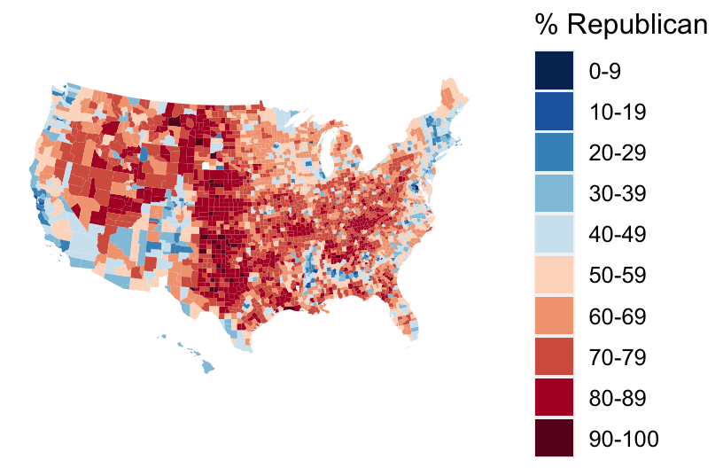
Exercise 10: Play around!
Construct county-level maps of median_rent and median_age.
Exercise 11: Choropleth maps with leaflet
Though ggplot() is often better for this purpose, we can also make choropleth maps with leaflet(). If you’re curious, check out the leaflet documentation:
---title: "Spatial viz"number-sections: trueexecute: warning: falsefig-height: 2.75fig-width: 4.25fig-env: 'figure'fig-pos: 'h'fig-align: centercode-fold: false---## Exercises### PreviewYou'll explore some R spatial viz tools below. In general, there are two important pieces to every map:**Piece 1: A dataset**This dataset must include either:- location coordinates for your points of interest (for point maps); or- variable outcomes for your regions of interest (for choropleth maps)\**Piece 2: A background map**We need latitude and longitude coordinates to specify the boundaries for your regions of interest (eg: countries, states). This is where it gets really sticky!- County-level, state-level, country-level, continent-level info live in multiple places.- Where we grab this info *can* depend upon whether we want to make a point map or a choropleth map. (The background maps can be used somewhat interchangeably, but it requires extra code :/)- Where we grab this info can also depend upon the structure of our data and how much data wrangling / cleaning we're up for. For choropleth maps, the labels of regions in our data must match those in the background map. For example, if our data labels states with their abbreviations (eg: MN) and the background map refers to them as full names in lower case (eg: minnesota), we have to wrangle our data so that it matches the background map.In short, the code for spatial viz gets very specialized. The goal of these exercises is to:- play around and experience the wide variety of spatial viz tools out there- understand the difference between point maps and choropleth maps- have funYou can skip around as you wish and it's totally fine if you don't finish everything. Just come back at some point to play around.### Part 1: Interactive points on a map with `leaflet`[Leaflet](https://leafletjs.com/) is an open-source JavaScript library for creating maps. We can use it inside R through the `leaflet` package.This uses a different plotting framework than `ggplot2`, but still has a `tidyverse` feel (which will become more clear as we learn other tidyverse tools!).The general steps are as follows:1. Create a *map widget* by calling `leaflet()` and telling it the data to use.2. Add a *base map* using `addTiles()` (the default) or `addProviderTiles()`.3. Add *layers* to the map using layer functions (e.g. `addMarkers()`, `addPolygons()`).4. Print the map widget to *display* it.#### Exercise 1: A leaflet with markers / points {-}Earlier this semester, I asked for the latitude and longitude of one of your favorite places. I rounded these to the nearest whole number, so that they're near to but not exactly at those places. Let's load the data and map it!```{r}fave_places <-read.csv("https://ajohns24.github.io/data/112/our_fave_places.csv")# Check it outhead(fave_places)```##### Part a {-}You can use a "two-finger scroll" to zoom in and out.```{r}# Load the leaflet packagelibrary(leaflet)# Just a plotting frameleaflet(data = fave_places)``````{r}# Now what do we have?leaflet(data = fave_places) %>%addTiles()``````{r}# Now what do we have?# longitude and latitude refer to the variables in our dataleaflet(data = fave_places) %>%addTiles() %>%addMarkers(lng =~longitude, lat =~latitude)``````{r}# Since we named them "longitude" and "latitude", the function# automatically recognizes these variables. No need to write them!leaflet(data = fave_places) %>%addTiles() %>%addMarkers()```##### Part b {-}**PLAY AROUND!** This map is interactive. Zoom in on one location. Keep zooming -- what level of detail can you get into? How does that detail depend upon where you try to zoom in (thus what are the limitations of this tool)?You can see the type of landscape, the roads. You lose information from other places when you do this. #### Exercise 2: Details {-}We can change all sorts of details in leaflet maps.```{r}# Load package needed to change colorlibrary(gplots)``````{r}# We can add colored circles instead of markers at each locationleaflet(data = fave_places) %>%addTiles() %>%addCircles(color =col2hex("red"))``````{r}# We can change the background# Mark locations with yellow dots# And connect the dots, in their order in the dataset, with green lines# (These green lines don't mean anything here, but would if this were somebody's travel path!)leaflet(data = fave_places) %>%addProviderTiles("USGS") %>%addCircles(weight =10, opacity =1, color =col2hex("yellow")) %>%addPolylines(lng =~longitude,lat =~latitude,color =col2hex("green") )```In general:- `addProviderTiles()` changes the base map.\ To explore all available provider base maps, type `providers` in the console. (Though some don't work :/)- Use `addMarkers()` or `addCircles()` to mark locations. Type `?addControl` into the console to pull up a help file which summarizes the aesthetics of these markers and how you can change them. For example: - `weight` = how thick to make the lines, points, pixels - `opacity` = transparency (like `alpha` in `ggplot2`) - colors need to be in "hex" form. We used the `col2hex()` function from the `gplots` library to do that#### Exercise 3: Your turn {-}The `starbucks` data, compiled by Danny Kaplan, contains information about every Starbucks in the world at the time the data were collected, including `Latitude` and `Longitude`:```{r}library(dplyr)``````{r}# Import starbucks location datastarbucks <-read.csv("https://mac-stat.github.io/data/starbucks.csv")```Let's focus on only those in Minnesota for now:```{r}# Don't worry about the syntaxstarbucks_mn <- starbucks %>%filter(Country =="US", State.Province =="MN")```Create a leaflet map of the Starbucks locations in Minnesota. Keep it simple -- go back to Exercise 1 for an example.```{r}leaflet(data=starbucks_mn)%>%addTiles()%>%addMarkers(lat=~Latitude, lng=~Longitude)```### Part 2: Static points on a mapLeaflet is very powerful and fun. But:- It's not great when we have lots of points to map -- it takes lots of time.- It makes good interactive maps, but we often need a static map (eg: we can print interactive maps!).Let's explore how to make point maps with `ggplot()`, not `leaflet()`.#### Exercise 3: A simple scatterplot {-}Let's start with the `ggplot()` tools we already know. Construct a scatterplot of all `starbucks` locations, not just those in Minnesota, with:- Latitude and Longitude coordinates (which goes on the y-axis?!)- Make the points transparent (alpha = 0.2) and smaller (size = 0.2)It's pretty cool that the plots we already know can provide some spatial context. But what *don't* you like about this plot?```{r}library(ggplot2)``````{r}ggplot(starbucks, aes(x=Longitude, y=Latitude))+geom_point(alpha=0.2, size=0.2)```#### Exercise 4: Adding a country-level background {-}Let's add a background map of *country-level* boundaries.#### Part a {-}First, we can grab country-level boundaries from the `rnaturalearth` package.```{r}# Load the packagelibrary(rnaturalearth)# Get info about country boundaries across the world# in a "sf" or simple feature formatworld_boundaries <-ne_countries(returnclass ="sf")```In your **console**, type `world_boundaries` to check out what's stored there. Don't print it our in your Rmd -- printing it would be really messy there (even just the `head()`).##### Part b {-}Run the chunks below to build up a new map.```{r}# What does this code produce?# What geom are we using for the point map?ggplot(world_boundaries) +geom_sf()``````{r}# Load package needed to change map themelibrary(mosaic)# Add a point for each Starbucks# NOTE: The Starbucks info is in our starbucks data, not world_boundaries# How does this change how we use geom_point?!ggplot(world_boundaries) +geom_sf() +geom_point(data = starbucks,aes(x = Longitude, y = Latitude),alpha =0.3, size =0.2, color ="darkgreen" ) +theme_map()```##### Part c {-}Summarize what you learned about Starbucks from this map.The more colonial the country, the more starbucks (except for Italy). #### Exercise 5: Zooming in on some countries {-}Instead of `world_boundaries <- ne_countries(returnclass = 'sf')` we could zoom in on...- the continent of Africa: `ne_countries(continent = 'Africa', returnclass = 'sf')`- a set of countries: `ne_countries(country = c('france', 'united kingdom', 'germany'), returnclass = 'sf')`- boundaries within a country: `ne_states(country = 'united states of america', returnclass = 'sf')`Our goal here will be to map the Starbucks locations in Canada, Mexico, and the US.##### Part a {-}To make this map, we again need two pieces of information.1. Data on Starbucks for *only* Canada, Mexico, and the US, labeled as "CA", "MX", "US" in the `starbucks` data.```{r}# We'll learn this syntax soon! Don't worry about it now.starbucks_cma <- starbucks %>%filter(Country %in%c('CA', 'MX', 'US'))```2. A background map of state- and national-level boundaries in Canada, Mexico, and the US. This requires `ne_states()` in the `rnaturalearth` package where the countries are labeled 'canada', 'mexico', 'united states of america'.```{r}cma_boundaries <-ne_states(country =c("canada", "mexico", "united states of america"),returnclass ="sf")```##### Part b {-}Make the map!```{r}# Just the boundariesggplot(cma_boundaries) +geom_sf()``````{r}# Add the points# And zoom inggplot(cma_boundaries) +geom_sf() +geom_point(data = starbucks_cma,aes(x = Longitude, y = Latitude),alpha =0.3,size =0.2,color ="darkgreen" ) +coord_sf(xlim =c(-179.14, -50)) +theme_map()```#### Exercise 6: A state and county-level map {-}Let's get an even *higher* resolution map of Starbucks locations within the states of Minnesota, Wisconsin, North Dakota, and South Dakota, with a background map at the county-level.#### Part a {-}To make this map, we again need two pieces of information.1. Data on Starbucks for *only* the states of interest.```{r}starbucks_midwest <- starbucks %>%filter(State.Province %in%c("MN", "ND", "SD", "WI"))```2. A background map of state- and county-level boundaries in these states. This requires `st_as_sf()` in the `sf` package, and `map()` in the `maps` package, where the countries are labeled 'minnesota', 'north dakota', etc.```{r}# Load packageslibrary(sf)library(maps)# Get the boundariesmidwest_boundaries <-st_as_sf( maps::map("county",region =c("minnesota", "wisconsin", "north dakota", "south dakota"), fill =TRUE, plot =FALSE))# Check it outhead(midwest_boundaries)```##### Part b {-}Adjust the code below to make the plot! Remove the `#` to run it.```{r}ggplot(midwest_boundaries) +geom_sf() +geom_point(data = starbucks_midwest,aes(x = Longitude, y = Latitude),alpha =0.7,size =0.2, color ='darkgreen' ) +theme_map()```#### Exercise 7: Contour maps {-}Especially when there are lots of point locations, and those locations start overlapping on a map, it can be tough to visualize areas of higher *density*. Consider the Starbucks locations in Canada, Mexico, and the US that we mapped earlier:```{r}# Point map (we made this earlier)ggplot(cma_boundaries) +geom_sf() +geom_point(data = starbucks_cma,aes(x = Longitude, y = Latitude),alpha =0.3,size =0.2,color ="darkgreen" ) +coord_sf(xlim =c(-179.14, -50), ylim =c(14.54, 83.11)) +theme_map()```Now check out the contour map.```{r}# What changed in the plot?# What changed in our code?!ggplot(cma_boundaries) +geom_sf() +geom_density_2d(data = starbucks_cma,aes(x = Longitude, y = Latitude),size =0.2,color ="darkgreen" ) +coord_sf(xlim =c(-179.14, -50), ylim =c(14.54, 83.11)) +theme_map()```### Part 3: Choropleth mapsSpatial data isn't always in the form of point locations! For example, recall the state and county-level data on presidential elections.```{r}library(dplyr)library(ggplot2)library(tidyverse)``````{r}elections_by_state <-read.csv("https://mac-stat.github.io/data/election_2020_by_state.csv")elections_by_counties <-read.csv("https://mac-stat.github.io/data/election_2020_county.csv")```In these datasets, we're interested in the overall election outcome by region (state or county), not the specific geographic location of some observation. Let's wrangle our data first. We'll focus on just a few variables of interest, and create a new variable (`repub_20_categories`) that *discretizes* the `repub_pct_20` variable into increments of 5 percentage points (for states) or 10 percentage points (for counties):```{r}# Don't worry about the code!elections_by_state <- elections_by_state %>%filter(state_abbr !="DC") %>%select(state_name, state_abbr, repub_pct_20) %>%mutate(repub_20_categories =cut(repub_pct_20, breaks =seq(30, 70, by =5), labels =c("30-34", "35-39", "40-44", "45-49","50-54", "55-59", "60-64", "65-70"), include.lowest =TRUE))elections_by_counties <- elections_by_counties %>%select(state_name, state_abbr, county_name, county_fips, repub_pct_20, median_age, median_rent) %>%mutate(repub_20_categories =cut(repub_pct_20, breaks =seq(0, 100, by =10),labels =c("0-9", "10-19", "20-29", "30-39", "40-49","50-59", "60-69", "70-79", "80-89", "90-100"),include.lowest =TRUE))```#### Exercise 8: State-level choropleth maps {-}Let's map the 2020 Republican support in each *state*, `repub_pct_20`.#### Part a {-}We again need two pieces of information.1. Data on elections in each state, which we already have: `elections_by_state`.2. A background map of state boundaries in the US. The boundaries we used for point maps don't work here. (Optional detail: they're `sf` objects and we now need a `data.frame` object.) Instead, we can use the `map_data()` function from the `ggplot2` package:```{r}# Get the latitude and longitude coordinates of state boundariesstates_map <-map_data("state")# Check it outhead(states_map)```##### Pause {-}**Important detail:** Note that the `region` variable in `states_map`, and the `state_name` variable in `elections_by_state` both label states by the full name in lower case letters. This is critical to the background map and our data being able to communicate.```{r}head(states_map)head(elections_by_state) ```##### Part b {-}Now map `repub_pct_20` by state.```{r}# Note where the dataset, elections_by_state, is used# Note where the background map, states_map, is usedggplot(elections_by_state, aes(map_id = state_name, fill = repub_pct_20)) +geom_map(map = states_map) +expand_limits(x = states_map$long, y = states_map$lat) +theme_map() ``````{r}# Make it nicer!ggplot(elections_by_state, aes(map_id = state_name, fill = repub_pct_20)) +geom_map(map = states_map) +expand_limits(x = states_map$long, y = states_map$lat) +theme_map() +scale_fill_gradientn(name ="% Republican", colors =c("blue", "purple", "red"), values = scales::rescale(seq(0, 100, by =5)))```It's not easy to get fine control over the color scale for the quantitative `repub_pct_20` variable. Instead, let's plot the *discretized* version, `repub_20_categories`:```{r}ggplot(elections_by_state, aes(map_id = state_name, fill = repub_20_categories)) +geom_map(map = states_map) +expand_limits(x = states_map$long, y = states_map$lat) +theme_map()``````{r}# Load package needed for refining color palettelibrary(RColorBrewer)# Now fix the colorsggplot(elections_by_state, aes(map_id = state_name, fill = repub_20_categories)) +geom_map(map = states_map) +expand_limits(x = states_map$long, y = states_map$lat) +theme_map() +scale_fill_manual(values =rev(brewer.pal(8, "RdBu")), name ="% Republican")```##### Part c {-}We can add other layers, like points, on top of a choropleth map. Add a Starbucks layer! Do you notice any relationship between Starbucks and elections? Or are we just doing things at this point? ;)```{r}# Get only the starbucks data from the USstarbucks_us <- starbucks %>%filter(Country =="US")# Map itggplot(elections_by_state, aes(map_id = state_name, fill = repub_20_categories)) +geom_map(map = states_map) +geom_point(data = starbucks_us,aes(x = Longitude, y = Latitude),size =0.05,alpha =0.2,inherit.aes =FALSE ) +expand_limits(x = states_map$long, y = states_map$lat) +theme_map() +scale_fill_manual(values =rev(brewer.pal(8, "RdBu")), name ="% Republican")```**Details (if you're curious)**- `map_id` is a required aesthetic for `geom_map()`. - It specifies which variable in our dataset indicates the region (here `state_name`). - It connects this variable (`state_name`) to the `region` variable in our mapping background (`states_map`). These variables must have the same possible outcomes in order to be matched up (`alabama`, `alaska`, `arizona`,...).- `expand_limits()` assures that the map covers the entire area it's supposed to, by pulling longitudes and latitudes from the `states_map`.##### Part d {-}geom_map()### Exercise 9: County-level choropleth maps {-}Let's map the 2020 Republican support in each *county*.##### Part a {-}We again need two pieces of information.1. Data on elections in each county, which we already have: `elections_by_county`.2. A background map of county boundaries in the US, stored in the `county_map` dataset in the `socviz` package:```{r}# Get the latitude and longitude coordinates of county boundarieslibrary(socviz)data(county_map) # Check it outhead(county_map)```##### Pause {-}**Important detail:** We officially have a headache. Our `county_map` refers to each county by a **5-number** `id`. Our `elections_by_counties` data refers to each county by a `county_fips` code, which is *mostly* the same as `id`, BUT drops any 0's at the beginning of the code.```{r}head(county_map)head(elections_by_counties)```This just means that we have to wrangle the data so that it can communicate with the background map.```{r}# Add 0's at the beginning of any fips_code that's fewer than 5 numbers long# Don't worry about the syntaxelections_by_counties <- elections_by_counties %>%mutate(county_fips =as.character(county_fips)) %>%mutate(county_fips =ifelse(nchar(county_fips) ==4, paste0("0", county_fips), county_fips))```##### Part b {-}*Now* map Republican support by county. Let's go straight to the discretized `repub_20_categories` variable, and a good color scale.```{r}ggplot(elections_by_counties, aes(map_id = county_fips, fill = repub_20_categories)) +geom_map(map = county_map) +scale_fill_manual(values =rev(brewer.pal(10, "RdBu")), name ="% Republican") +expand_limits(x = county_map$long, y = county_map$lat) +theme_map() +theme(legend.position ="right") +coord_equal()```#### Exercise 10: Play around! {-}Construct county-level maps of `median_rent` and `median_age`.#### Exercise 11: Choropleth maps with leaflet {-}Though `ggplot()` is often better for this purpose, we can also make choropleth maps with `leaflet()`. If you're curious, check out the `leaflet` documentation:<https://rstudio.github.io/leaflet/choropleths.html>